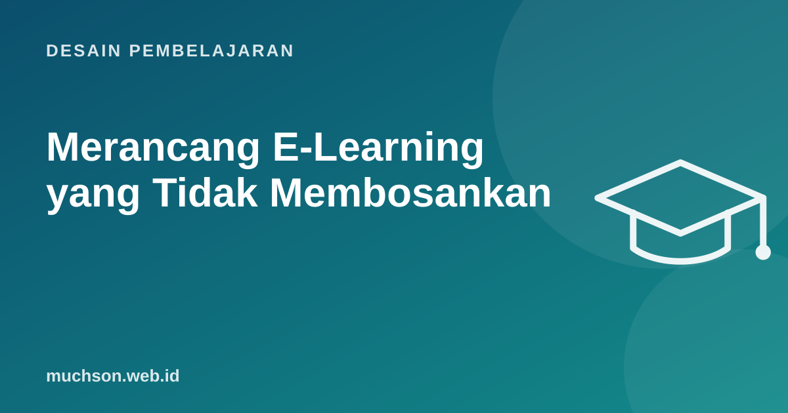

Beranda › Artikel › Desain Pembelajaran
Desain PembelajaranMerancang E-Learning yang Tidak Membosankan
Banyak e-learning korporat berpola sama: slide berisi teks, tombol "lanjut", lalu kuis pilihan ganda di akhir. Peserta mengklik secepat mungkin agar cepat selesai. Masalahnya bukan medium digital, melainkan desain yang memperlakukan peserta sebagai pembaca, bukan pelaku. Berikut cara mengubahnya, berdasarkan pengalaman saya membangun playground interaktif untuk program pelatihan.

Gejala e-learning yang membosankan
- Interaksi hanya "klik lanjut" atau membuka tab berisi teks.
- Kuis menguji hafalan definisi, bukan keputusan kerja.
- Tidak ada konsekuensi: jawaban salah langsung diberi tahu benarnya.
- Satu jalur untuk semua peserta, baik pemula maupun yang sudah mahir.
- Diukur dari tingkat penyelesaian, bukan perubahan kerja.
Prinsip 1: mulai dari keputusan, bukan informasi
Tanyakan: keputusan apa yang harus diambil peserta dalam pekerjaannya? Lalu buat latihan berupa situasi yang memaksa mereka mengambil keputusan itu. Cathy Moore menyebut pendekatan ini "action mapping": dari tujuan bisnis, ke tindakan yang dibutuhkan, ke latihan realistis, baru kemudian informasi secukupnya.
Prinsip 2: skenario dengan konsekuensi
Prinsip 3: playground, bukan sekadar halaman
Untuk keterampilan digital, cara terbaik belajar adalah melakukan di lingkungan yang aman. Playground bisa berupa simulasi dashboard, editor kode di browser, kalkulator kasus bisnis, atau papan tempel ide. Peserta boleh salah tanpa merusak sistem sungguhan.
Prinsip 4: umpan balik yang mengajar
"Salah, jawaban yang benar B" tidak mengajarkan apa pun. Umpan balik yang baik menjelaskan mengapa, menunjukkan konsekuensi, dan memberi kesempatan mencoba lagi.
Kurang: "Salah. Jawaban yang benar adalah B."
Lebih baik: "Email promo saat pelanggan sedang kecewa sering dianggap
tidak peduli. Dalam data tim kita, akun seperti ini lebih
sering tidak memperpanjang. Coba pilih langkah yang lebih dulu
menyelesaikan keluhannya."Prinsip 5: hormati waktu dan kemampuan peserta
- Izinkan peserta yang sudah mahir mengikuti tes awal dan melewati bagian yang sudah dikuasai.
- Pecah modul menjadi bagian 5-10 menit.
- Tampilkan perkiraan durasi di setiap bagian.
- Pastikan berjalan di ponsel bila peserta belajar di sela kerja.
- Ikuti prinsip aksesibilitas: kontras, teks alternatif, subtitle, navigasi keyboard.
Tanya jawab
Alat apa untuk membuat e-learning interaktif?
Apakah gamifikasi menyelesaikan masalah e-learning membosankan?
Berapa lama idealnya satu modul?
Sumber dan bacaan lanjut
- Cathy Moore: Action Mapping
- H5P: create, share and reuse interactive HTML5 content
- Gamifikasi pembelajaran (artikel terkait)